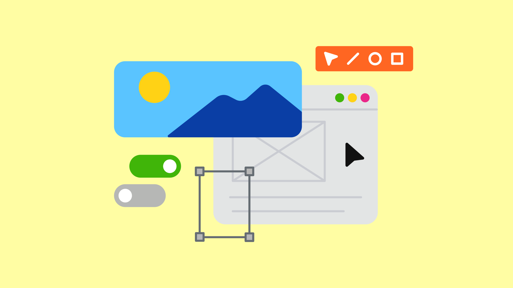
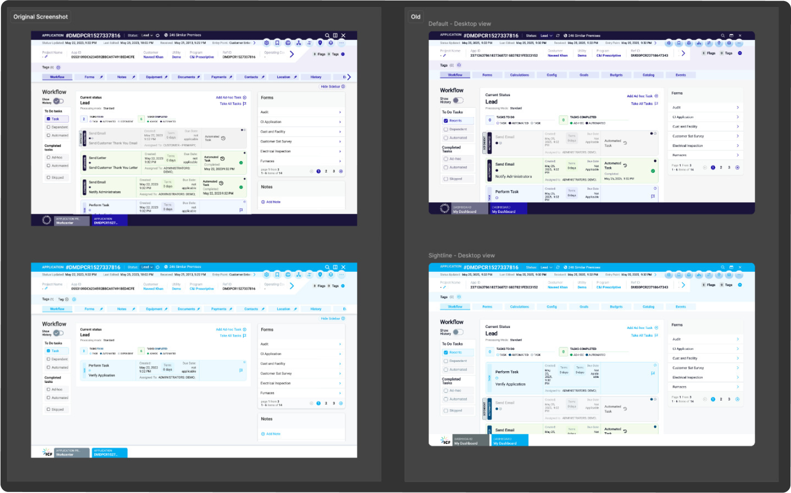
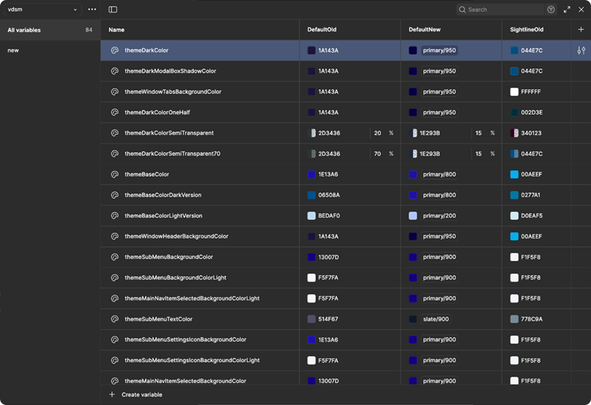
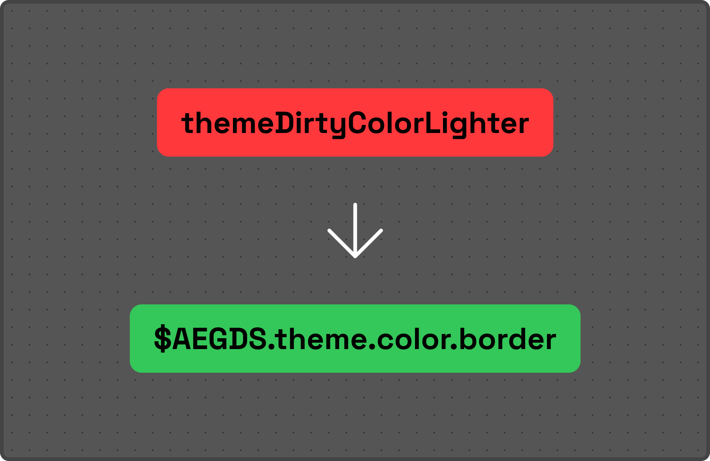
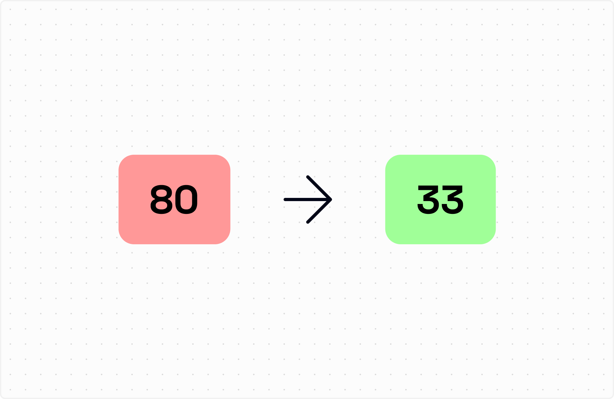
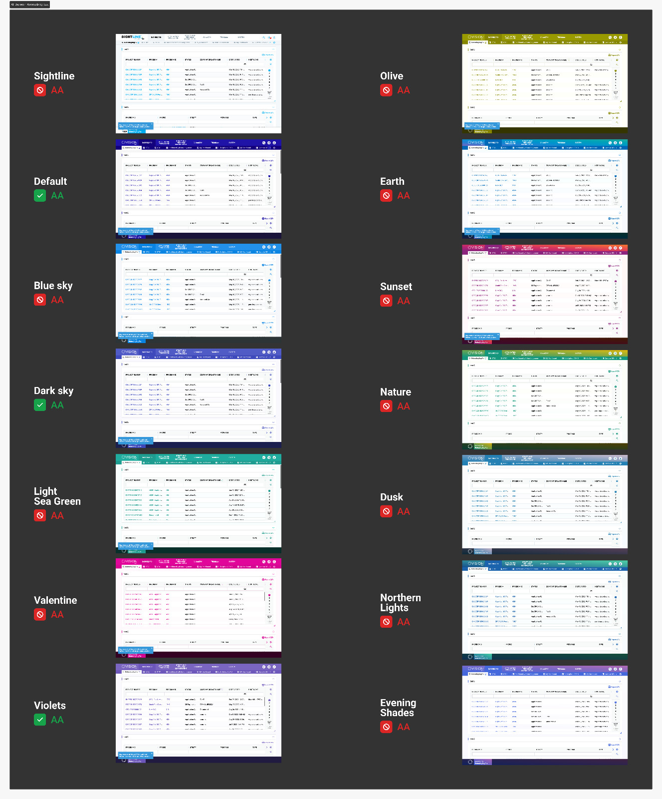
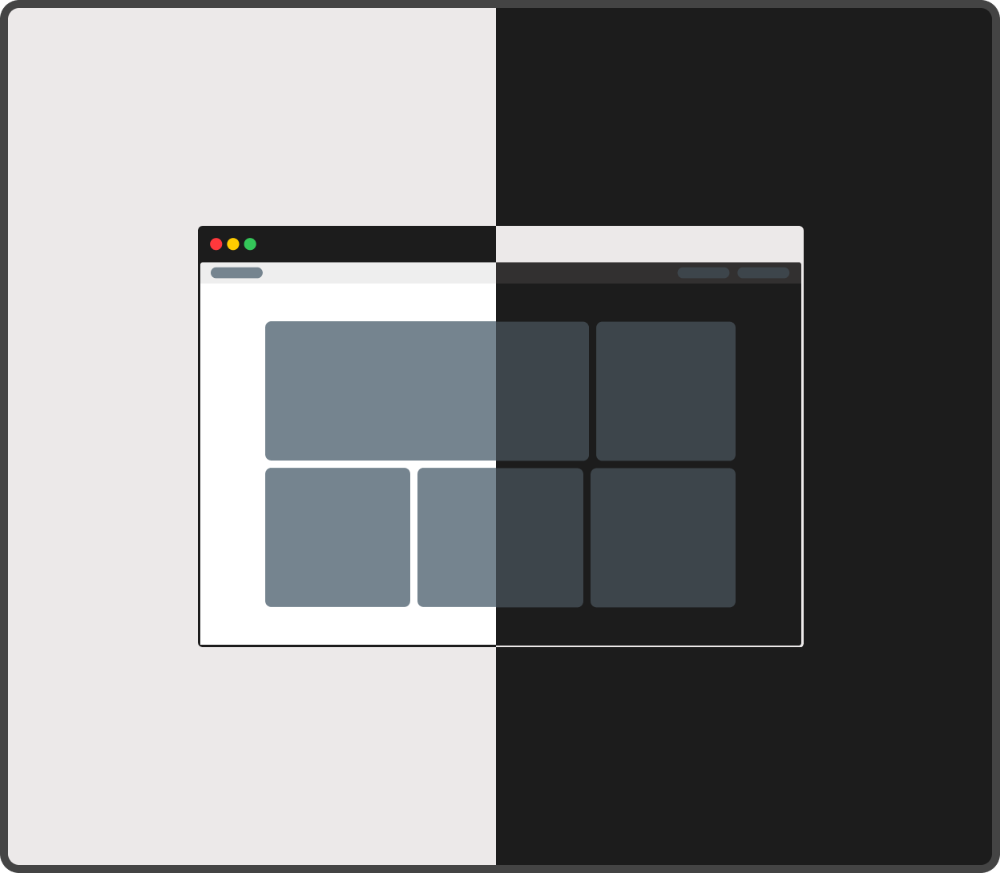
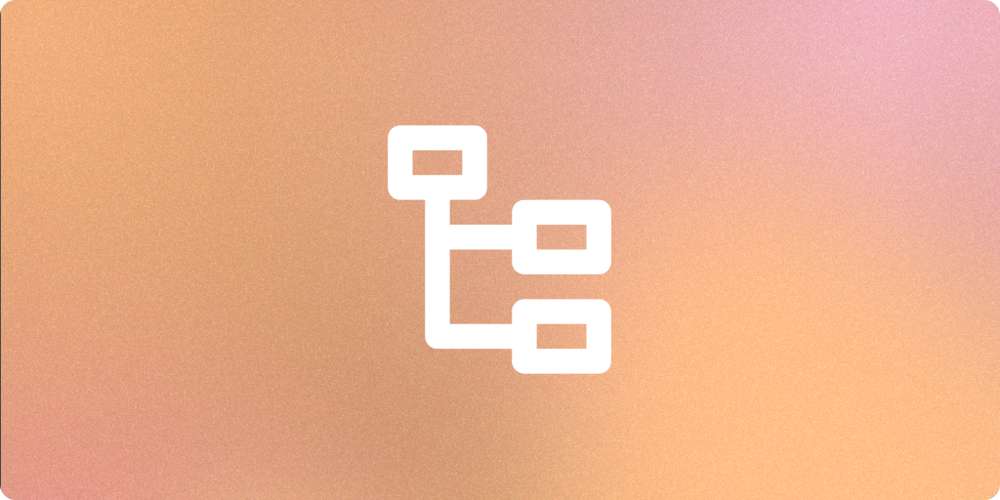
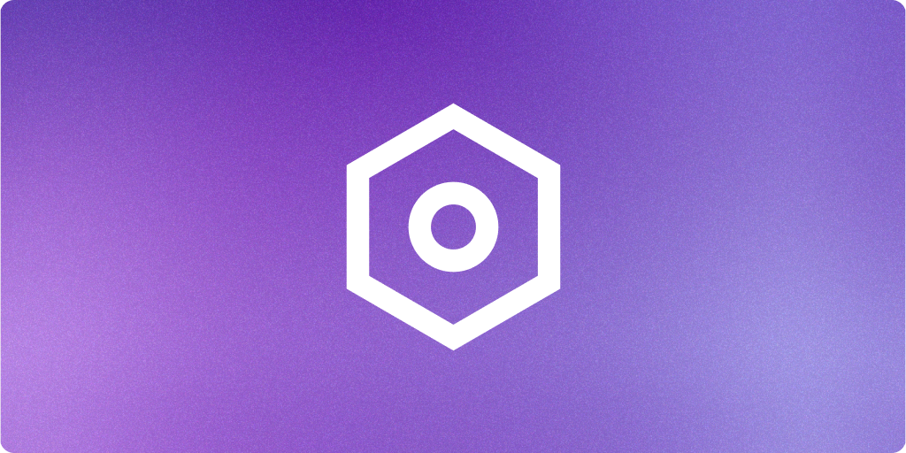

Strategy
Design System
Accessibility
Over time, AEG’s color system had evolved without a clear structure. Colors were duplicated, tokens lacked meaning, and hardcoded values made updates risky and time-consuming.
The first step was understanding how colors were actually being used across the product. The audit revealed:
Because the existing product had no updated design source files, the interface was reconstructed in Figma to create a reliable testing environment.

Before introducing a new system, I mapped existing tokens across real product screens.

The previous system described colors by appearance rather than purpose.

Colors that change depending on brand/theme.
Universal states such as: Success, Warning, Critical, Information

Through consolidation and removal of redundancies, the token list was significantly reduced. The system became easier to understand, maintain, and extend.
Accessibility was not treated as a final check—it became part of the token creation process. Each theme was reviewed against WCAG contrast requirements.
Only 3 of 12 themes passed contrast checks
All themes achieved accessible contrast levels

The previous token structure made dark mode difficult to maintain because colors were tied to specific values instead of usage. The new semantic approach allowed dark mode variations to be created by adjusting theme values instead of rebuilding components.

Reduced the color system from 80 → 33 tokens, removing duplication and making usage clearer.

Previously, creating or adjusting themes required days of manual updates.With the new token architecture, themes could be configured in minutes.

Tokens aligned with Tailwind conventions, reducing translation effort between design and development.
All 12 themes were reviewed and updated to meet accessibility standards.